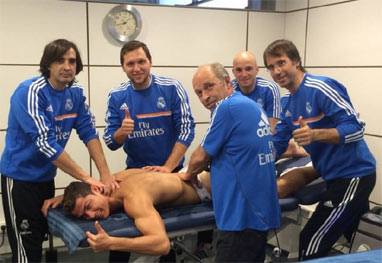

Sobre nós

Playermaker: Gerenciando a Carreira Esportiva de Atletas no Futebol
O Playermaker é uma plataforma inovadora dedicada à gestão e desenvolvimento da carreira de atletas de futebol, oferecendo soluções personalizadas e ferramentas digitais para maximizar o potencial de cada jogador. O site foi criado para conectar atletas, clubes e profissionais do esporte, proporcionando um ecossistema completo para o gerenciamento da carreira esportiva.
Com uma abordagem única, o Playermaker não se limita a ser uma simples plataforma de agenciamento.
Ele vai além, oferecendo recursos estratégicos e suporte em diversas áreas cruciais para o sucesso no futebol, como:
Gestão de Carreira: A plataforma oferece aos jogadores uma visão estratégica de longo prazo para suas carreiras, ajudando-os a tomar decisões sobre transferências, contratos, e planos de desenvolvimento, além de acompanhar o desempenho e a evolução ao longo dos anos.
Análise de Desempenho: Com base em dados e estatísticas de jogos e treinamentos, o Playermaker analisa o desempenho do atleta, oferecendo insights sobre pontos fortes, áreas a melhorar e como aumentar a visibilidade no mercado. Esses dados ajudam tanto o jogador quanto seus representantes a tomar decisões mais informadas.
Consultoria e Desenvolvimento de Imagem: Entendendo que o futebol é um esporte tanto técnico quanto de imagem, o site oferece serviços de construção de marca pessoal. Com uma consultoria especializada, os atletas podem gerenciar sua presença nas redes sociais, aparições públicas e relações com patrocinadores.
Conexão com Clubes e Scouts: Playermaker também facilita o acesso direto a clubes e olheiros, criando um ambiente transparente onde os jogadores podem ser vistos por mais equipes ao redor do mundo. Além disso, a plataforma possibilita a realização de avaliações e negociações, trazendo maior segurança e agilidade para todas as partes envolvidas.
Acompanhamento de Saúde e Bem-Estar: A saúde física e mental de um atleta é fundamental para o seu desempenho. A plataforma oferece ferramentas para monitorar lesões, acompanhar a recuperação e garantir que o atleta tenha um acompanhamento contínuo de nutricionistas, fisioterapeutas e psicólogos esportivos.
Playermaker é a combinação de tecnologia, conhecimento especializado e um olhar estratégico para o futuro do futebol, criando uma experiência integrada e de longo prazo para jogadores, agentes e clubes. A plataforma visa transformar a gestão de carreiras esportivas em um processo mais eficiente, transparente e sustentável, ajudando os atletas a alcançar seu máximo potencial dentro e fora de campo.
© 2024-2024 PLAYERMAKER - Direitos reservados